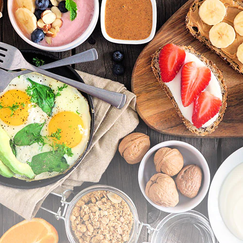
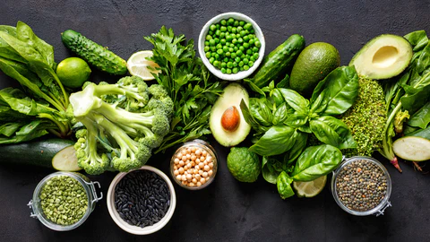
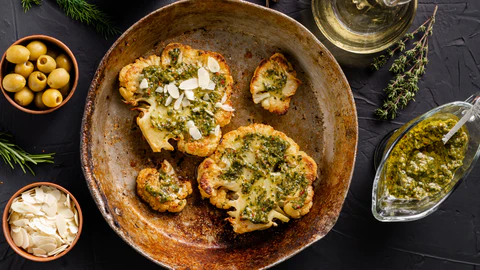

Vejetaryen diyet et, balık ve kümes hayvanlarının tüketimini yasaklayan bir diyet türüdür. Son yıllarda vejetaryen diyet, oldukça popüler bir diyet türü olma yolunda ilerlemektedir. Bazı araştırmalara göre vejetaryenlerin dünya nüfusunun %18'ini oluşturduğu tahmin ediliyor. İyi planlanmış bir vejetaryen diyet, eti diyetinizden çıkarmanın etik ve çevresel faydalarına ek olarak, kronik hastalık riskini azaltabilmekte, kilo vermenize yardımcı olabilmekte ve yemeğinizin kalitesini artırabilmektedir. Vejetaryenlik, hayvan hakları gibi etik kaygıların yanı sıra dini veya kişisel nedenlerle yaygın olarak uygulanmaktadır.
Vejetaryen Diyet Nasıl Yapılır?
Vejetaryen bir diyetten en iyi şekilde yararlanmak için bütün meyve ve sebzeler, baklagiller ve kuruyemişler ve kepekli tahıllar gibi bir dizi sağlıklı bitki bazlı gıda seçilmelidir. Aynı zamanda, şekerle tatlandırılmış içecekler, meyve suları ve rafine karbonhidratlar dahil daha az besleyici seçenekler sınırlandırılmalıdır. Nitelikli bir diyetisyen, ihtiyacınız olduğunda size uygun bir vejetaryen planı geliştirmenize yardımcı olabilir.
Diyetiniz ne kadar kısıtlı olursa, ihtiyacınız olan tüm besin maddelerini almanın o kadar zor olacağını unutmayın. Örneğin, demir bileşeni kırmızı ette oldukça fazla bulunmaktadır. Vejetaryen diyet uygulandığında kırmızı etten mahrum kalan vücutta demir eksikliği görülebilir. Bu durumda doktora danışılmalı ve takviye edici gıdalar kullanılmalıdır. Diyetinizin vücudunuzun ihtiyaç duyduğu her şeyi içerdiğinden emin olmak vejetaryen diyet metodu için oldukça önemlidir.
Vejetaryen diyetini uygulamak için, her hafta yediğiniz domates soslu spagetti veya sebzeli tavada kızartma gibi etsiz yemeklerin miktarını artırın. Ispanak, lahana, pazı ve karalahana gibi yeşillikleri öğünlerinize ekleyin ve sık sık bu ürünleri tercih edin. Et ile yapılan favori tariflerinizden bazılarını vejetaryen diyet türüne uyarlamaya çalışın. Örneğin, tavuk yerine ekstra katı tofu ile fajita yapın. Birçok yemeğin sadece küçük ayarlamalar gerektirdiğini öğrenmek sizi şaşırtabilir. Vejetaryen menüler arıyorsanız internete bakmalısınız. Vejetaryen diyetinize çeşitlilik eklerseniz, tüm beslenme ihtiyaçlarınızı karşılama olasılığınız daha yüksek olacaktır.

Vejetaryen Diyet Türleri Nelerdir?
Aşağıda vejetaryen diyet türleri listelenmiştir.
- Lakto-ovo-vejetaryen diyet: Süt ürünlerinin ve yumurtanın kullanıldığı ancak hiçbir et türünün kullanılmadığı bir vejetaryen diyet türüdür.
- Lakto-vejetaryen diyet: Et, balık, kümes hayvanları ve yumurtanın tüketilmediği, ancak süt ürünlerinin tüketildiği vejetaryen diyet türüdür.
- Ovo-vejetaryen diyet: Et, balık, kümes hayvanları ve süt ürünlerinin tüketilmediği, ancak yumurtanın tüketildiği vejetaryen diyet türüdür.
- Pesketaryen diyet: Et ve kümes hayvanlarının tüketilmediği, ancak balık ve bazen yumurta ve süt ürünlerinin tüketildiği vejetaryen diyet türüdür.
- Vegan diyeti: Et, balık, kümes hayvanları, yumurta ve süt ürünleri ile bal gibi diğer hayvansal kaynaklı ürünlerinin tüketilmediği vejetaryen diyet türüdür
- Flexitarian diyeti: Ara sıra et, balık veya kümes hayvanlarının tüketildiği, ancak çoğunlukla vejetaryen ürünlerin tüketildiği bir diyet.
Vejetaryen Dostu Diğer Diyetler Nedir?
Vejetaryen dostu diğer diyetler aşağıda listelenmiştir.
- Vejetaryen Akdeniz Diyeti
- Atkins Diyetleri
- Vegan Diyeti
- Vejetaryen Paleo Diyeti
Vejetaryen Diyetinin Yararları Nelerdir?
Kilo kaybını artırır : Yağlı, şekerli, işlenmiş yiyeceklerden uzak tutan vejetaryen diyet sayesinde kilo kaybı meydana gelir. Sebze ve meyve ağırlıklı bu diyet türünde sebze ve meyvelerin içerdiği vitamin ve mineraller sayesinde vücuttaki metabolizma daha hızlı çalışır ve yağ yakımı meydana gelir. Bu sayede fazla kilolar yakılır ve sağlıklı, fit bir vücuda sahip olunur.
Kanser riskini azaltır : Yapılan araştırmalar sonucunda vejetaryen diyet uygulayan insanların daha az meme, kolon ve mide kanseri oldukları belirlenmiştir. Bu durum vejetaryen diyetin insanları işlenmiş gıdalardan uzak tutması ile doğrudan ilişkilendirilebilir.
Kan şekerini düzenler : Vejetaryen diyetlerin sağlıklı kan şekeri düzeylerini korumaya yardımcı olduğu çeşitli çalışmalarda gösterilmiştir. Örneğin vejetaryenlik, altı araştırmanın gözden geçirilmesinde tip 2 diyabetli hastalarda daha iyi kan şekeri seviyesi gözlemlenmiştir. Uzun vadede, vejetaryen diyetler kan şekerini dengeleyerek diyabetin önlenmesine yardımcı olabilmektedir.
Kalp sağlığını destekler : Vejetaryen diyetler, çeşitli kalp hastalığı risk faktörlerini azaltarak kalbinizin sağlıklı ve sağlam kalmasına yardımcı olur. Bunun nedeni kalp sağlığı için önemli olan tüm vitamin ve minerallerin bu diyet metodunda var olmasıdır. Daha az yağ tüketimi kalbin yağlanmasını önler ve kalp, çok daha rahat çalışır.

Vejetaryen Diyetinin Riskleri Nelerdir?
İyi dengelenmiş bir vejetaryen diyet sağlıklı olmaktadır. Bununla birlikte, hayvansal gıdalar ve benzeri yiyeceklerin tüketilmemesi durumunda bazı eksiklikleri vardır. Protein ve omega-3 yağ asitlerinin yanı sıra çinko, selenyum, demir ve B12 vitamini gibi mineraller et, tavuk ve balıkta bol miktarda bulunur. Kalsiyum, D vitamini ve B vitaminleri, süt ve yumurta gibi diğer hayvansal ürünlerde bol miktarda bulunur. Bu yiyecekler tüketilmediğinde insan vücudunda eksiklikleri hissedilir. Bu eksiklikler sonucunda inme riski, saç kaybı, kolin riski, halsizlik, anemi ve tiroid hastalığı gibi sorunlara yol açabilmektedir. Meyve, sebze, kepekli tahıllar, protein kaynakları ve güçlendirilmiş gıdaların bir karışımını tüketerek ihtiyacınız olan besin maddelerini elde etmek kolaydır. Takviyeler ve multivitaminler tüketmek eksiklikleri gidermenin başka bir yoludur.
Vejetaryen Diyet Nasıl Yapılır?
Aşağıda vejetaryen diyetin nasıl uygulanması gerektiği listelenmiştir.
- Meyveler, sebzeler, tahıllar, sağlıklı yağlar ve bitkisel proteinlerin tümü vejeteryan diyetine dahil edilmelidir.
- Diyetinize etin sağladığı proteini değiştirmek için fındık, tohum, baklagiller, soya peyniri ve seitan gibi protein açısından zengin çeşitli bitki besinlerini eklenmelidir.
- Lakto-ovo-vejetaryen bir diyet uygularsanız, yumurta ve süt ürünleri de protein alımını artırabilmektedir.
- Vejetaryen diyeti uygulanırken oluşan besin boşluğu, doktor gözetimi altında çeşitli takviye edici gıdalar kullanılarak doldurulmalıdır.
Vejetaryen Diyetinde Neler Yemelisiniz?
Aşağıda vejetaryen diyetinde yenmesi gereken yiyecekler listelenmiştir.
- Sebzeler: Yeşil yapraklı sebzeler, kuşkonmaz, brokoli, domates, havuç.
- Meyveler: Elma, muz, çilek, portakal, kavun, armut, şeftali.
- Tahıllar: Kinoa, arpa, karabuğday, pirinç, yulaf.
- Baklagiller: Mercimek, fasulye, bezelye, nohut.
- Kuruyemişler: Badem, ceviz, kaju, kestane
- Tohumlar: Keten tohumu, chia.
- Yağlar: Zeytinyağı, avokado yağı.
- Proteinler: Tempeh, tofu, seitan, natto, beslenme mayası, spirulina, yumurta, süt ürünleri.
Vejetaryen Diyette Kaçınmanız Gereken Yiyecekler Nelerdir?
Vejetaryenlikte, her biri kendi kısıtlamaları olan çeşitli türleri vardır. En popüler vejetaryen diyet türü tüm et, kümes hayvanları ve balık etlerinin tüketilmediği lakto-ovo vejetaryenliktir. Diğer vejetaryenler yumurta ve süt ürünleri gibi yiyeceklerden uzak durabilir. Et, kümes hayvanları, balık, yumurta, süt ürünleri ve diğer hayvansal ürünleri içermediği için vegan beslenme, vejetaryenliğin en kısıtlayıcı biçimidir. Bir vejetaryen diyette, ihtiyaçlarınıza ve tercihlerinize bağlı olarak aşağıdaki yiyecekleri tüketmemeniz gerek olabilmektedir:
- Kırmızı et, kümes hayvanlarının eti, balık eti.
- Et bazlı bileşenler : jelatin, karmin, isinglass.
- Yumurtalar: Bu kısıtlama veganlar ve lakto-vejetaryenler için geçerlidir.
- Süt ürünleri: Bu kısıtlama veganlar ve ovo-vejetaryenler için geçerlidir.
- Diğer hayvansal ürünler: Veganlar, bal, balmumu ve polen tüketiminden kaçınmalıdırlar.
Vejetaryen Diyetini Takip Etmek İçin En Iyi Uygulamalar Nelerdir?
Aşağıda vejetaryen diyetini takip etmek için en iyi uygulamalar listelenmiştir.
- Gerekli besinler hakkında araştırmalar yapıp öğrenmeye başlayın.
- Vejetaryen web sitelerinden, yerel sağlık gıda dükkanından veya bir beslenme uzmanından bazı ipuçları ve tarifler alın.
- Haftalık bir alışveriş ve yemek planı yapın.
- Tam bir protein sağlayan çeşitli et içermeyen yemeklere odaklanın.
- Değişikliği yavaş yavaş yapmayı düşünün.
- Tanıdık etsiz yiyeceklerle başlayın ve kendinizi alıştırmaya çalışın.
Kimler Vejetaryen Diyet Yapmalıdır?
Et yiyenlerle karşılaştırıldığında, vejetaryenler daha düşük yoğunluklu lipoprotein kolesterol seviyelerine sahiptirler. Daha düşük kan basıncına, daha düşük hipertansiyon ve daha düşük tip 2 diyabet risklerine sahip görünmektedirler. Vejetaryenler ayrıca daha düşük bir VKİ'ye, genel olarak düşük kanser oranlarına ve düşük kronik hastalık riskine sahiptirler. Sonuç olarak diyabet hastaları, aşırı kilolu kişiler, daha fit ve sağlıklı bir vücut isteyen kişiler ve çeşitli kalp rahatsızlıkları bulunan kişiler vejetaryen diyet yapmalıdırlar.
Bir Vücut Geliştirmeci Vejetaryen Diyetini Takip Edebilir Mi?
Vücut geliştiren kişiler için protein oldukça önemlidir. Protein olanakları bakımından normal beslenmenin yanında vejetaryen diyeti daha kısıtlı olsa da düzenli ve planlı bir vejetaryen diyetle vücut geliştirmek mümkündür.
Vücut geliştiriciler, estetik nedenlerle kaslarını güçlendirmek için şiddetli direnç uygulamalarını kullanırlar. Kas gelişimi sürecinde beslenmenin önemi göz ardı edilemez. Çoğu uzmana göre, protein alımı, optimal kas gelişimi için günlük vücut ağırlığının kilogramı başına yaklaşık 0.7-1.0 gram (kg başına 1.6-2.2 gram) olmalıdır. Vejetaryen vücut geliştirme diyetleri hiçbir hayvansal ürün içermez ve normal vegan diyetlerinden daha yüksek protein içeriğine sahiptir.
Vejetaryen bir diyet uygulamak basit gibi görünse de, tüm öğünleri yediğinizden emin olmak için dikkatli bir hazırlık gerektirir. Vejetaryen vücut geliştirme diyetindeki yemeklerin çoğu, birkaç temel öğeye dayanmaktadır. Vejetaryen vücut geliştirme diyetine başlamak için, birçok vejetaryen tarifi birçok malzemeyi gerektirdiğinden, gerekli tüm malzemelere sahip olduğunuzdan emin olmak için 5-7 günlük öğünler planlayın. Tipik bir diyetten vejetaryen olana geçiyorsanız, tüm geçişi yapmadan önce günlük diyetinize kademeli olarak daha fazla vejetaryen ürün eklemelisiniz. Yüksek proteinli bitkileri bol bol tüketmelisiniz. Yeterince yağ tükettiğinizden emin olmak zorundasınız. Çünkü spor uygulanırken, enerji gerekmektedir. Bu enerjinin çoğu yağ ve proteinden kullanılır. Ayrıca bol bol sıvı tüketilmesi gerekmektedir. Çünkü, bol lifli sebze tüketimi midede şişkinliğe neden olur. Bol sıvı tüketimi bu şişkinliğe iyi gelmektedir.
Vejetaryen Diyetinde Yüksek Protein Nasıl Alınır?
Vejetaryen diyeti uygulanırken protein alınmak isteniyorsa, bunun çözümü protein bakımından bol olan vejetaryen yiyecekleri tüketmektir. Seitan, tofu, baklagiller, kinoa, soya ve soya sütü protein bakımından yüksek vejetaryen yiyecekleridir. Tofu, tempeh, seitan gibi yiyeceklerin ülkemizde fazla maliyetli olmasından dolayı mercimek, fasulye, bezelye gibi yiyecekler tercih edilebilir.

Vejetaryen Diyet İçin En İyi Tarifler Nelerdir?
Aşağıda 5 en iyi vejetaryen tarifi listelenmiştir
- Yeşil Mercimek Köftesi: Protein bakımından zengin olan bu yemek aynı zamanda oldukça lezzetlidir. Mercimek haşlanarak süzülür. 1 adet soğan 4 yemek kaşığı zeytinyağı ile kavrulur. Tüm malzemeler bir kaba konulur ve galeta unu ile kıvamı gelene kadar yoğrulur. Daha sonra şekil verilip kızartılır.
- Ispanaklı Mantarlı Makarna : Bu yemek lif ve karbonhidrat bakımından oldukça zengindir. Aynı zamanda, oldukça sağlıklıdır. Makarna haşlanıp süzülür ve kenara konulur. Soğan ve mantarlar bir tavada zeytinyağı ile kavrulur. Daha sonra üzerine ıspanaklar eklenir. Üzerine sarımsak ve biraz sebze suyu konularak pişmesi beklenir. Daha sonra makarna ile karıştırılır.
- Vejetaryen Köfte : Bu köfte sağlık bakımından oldukça faydalıdır. İçeriğinde bol miktarda bitkisel protein ve karbonhidrat bulunur. Nohut 25-30 dakika kadar haşlanır ve kenara konulur. 1 kahve fincanı kırmızı mercimekte haşlanıp nohut ile karıştırılır. 2’si beraber rondodan geçirilir ve içerisine kimyon, nane, pul biber ve soğan tozu konur. Şekil verilir ve zeytinyağında kızartılır
- Patatesli Mantı : Patatesler haşlanarak kabukları soyulur ve püre haline getirilir. İçerisine kimyon, pul biber, karabiber konularak karıştırılır. Daha önceden hazırlanmış mantı hamurlarının içerisine konularak haşlanır. Üzeri için zeytinyağı ve taze nane tercih edilebilir.
- Mantar Kavurma : İçeriğinde çok sayıda sebze bulunduğundan vitamin ve mineral açısından zengindir. Mantar, kırmızı biber, soğan, yeşil biber ve sarımsak küp küp doğranarak zeytinyağında kavrulur. Üzerine nane, kekik ve pul biber konulabilir.